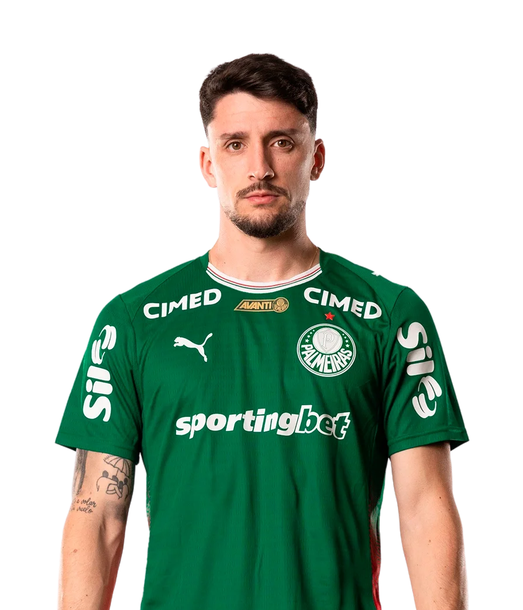
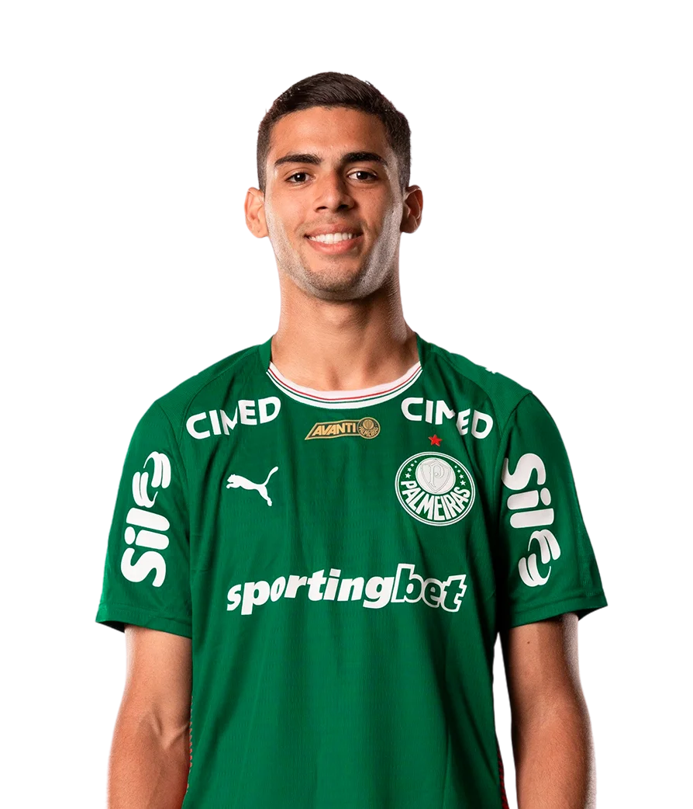
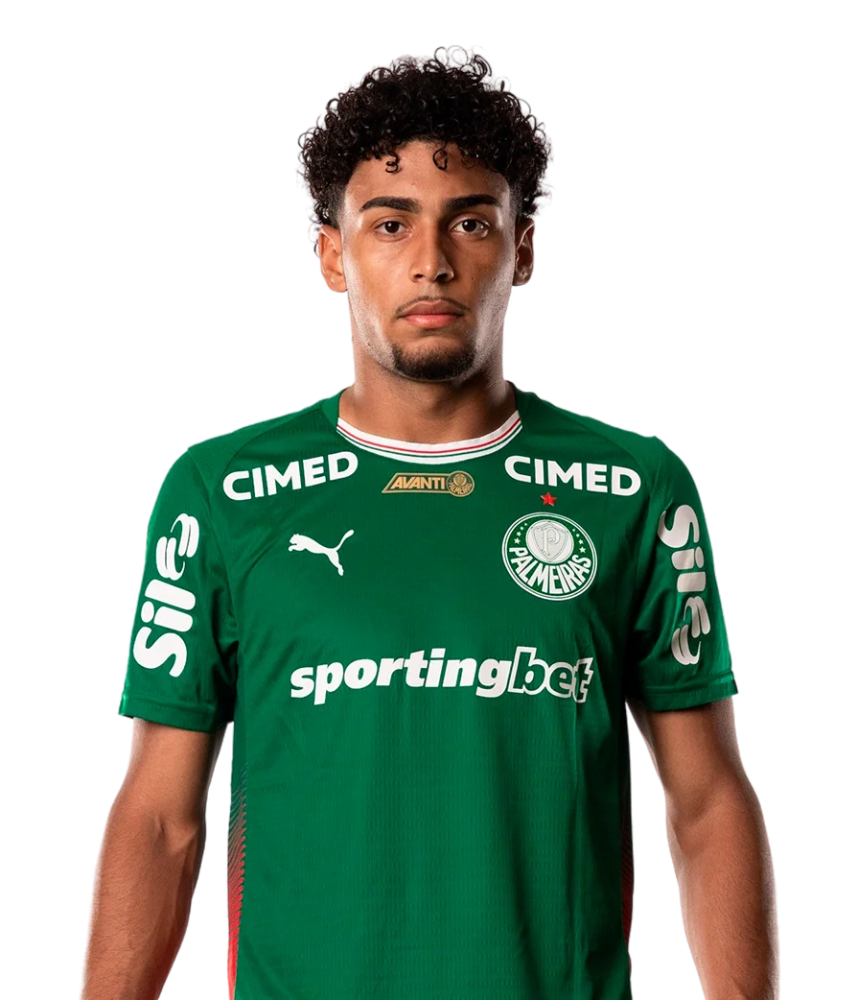

Elenco Principal
Conheça os atletas que defendem as cores do Verdão.

Carlos Miguel
GoleiroEnvergadura gigante e elasticidade para fechar o gol alviverde.
1
Marcelo Lomba
GoleiroExperiência, segurança e liderança nos momentos decisivos.
14
Aranha
GoleiroJovem promessa trabalhando com segurança e reflexos rápidos.
24
Bruno Fuchs
ZagueiroExcelente saída de bola, técnica refinada e antecipação precisa.
3
Agustín Giay
Lateral DireitoRaça argentina pura, intensidade máxima e firmeza na marcação.
4
Jefté
Lateral EsquerdoHabilidade, drible em velocidade e muito apoio ofensivo na ala.
6
Khellven
Lateral DireitoCruzamentos cirúrgicos e fôlego interminável pelo corredor direito.
12
Gustavo Gómez
ZagueiroO xerife paraguaio, capitão histórico que impõe respeito absoluto.
15
Joaquín Piquerez
Lateral EsquerdoGarra charrua na defesa e muita qualidade técnica no apoio.
22
Murilo
ZagueiroSegurança total por baixo e uma verdadeira arma fatal na bola aérea.
26
Benedetti
ZagueiroZagueiro imponente com excelente tempo de bola e força física.
43
Arthur
Lateral EsquerdoVersatilidade tática, recomposição rápida e solidez defensiva.
56
Felipe Anderson
Meio-CampistaA magia e refino do futebol europeu regendo nossa meiúca.
7
Andreas Pereira
Meio-CampistaVisão de jogo espetacular, passes cirúrgicos e mestre na bola parada.
8
Marlon Freitas
Meio-CampistaO ritmista do meio-campo, dita o jogo com tranquilidade e inteligência.
17
Mauricio
Meio-CampistaInfiltração agressiva na área e muita dinâmica na armação de jogadas.
18
Lucas Evangelista
Meio-CampistaEquilíbrio perfeito entre defesa e ataque com passes qualificados.
30
Emiliano Martínez
Meio-CampistaCombate incansável no meio, desarmes precisos e transição forte.
32
Figueiredo
Meio-CampistaMuita intensidade física, polivalência e forte chute de média distância.
38
Larson
Meio-CampistaJovem dinâmico com excelente leitura de espaços e chegada surpresa.
48
Vitor Roque
AtacanteO 'Tigrinho' faminto por gols, explosão física e instinto matador.
9
Paulinho
AtacanteO camisa 10 letal, movimentação inteligente e finalização cirúrgica.
10
Jhon Arias
AtacanteGinga colombiana, velocidade absurda e criatividade pelas pontas.
11
Ramón Sosa
AtacanteArrancadas imparáveis, drible agudo e agressividade no um contra um.
19
Luighi
AtacanteA joia da base alviverde com posicionamento impecável na área.
31
Allan
AtacanteVelocidade explosiva para quebrar linhas e servir os companheiros.
40
López
AtacanteO 'Flaco' artilheiro, soberano no jogo aéreo e faro de gol apurado.
42
Daniel Gonçalves
Coordenador do NSPLiderança estratégica integrando ciência, dados e performance de elite.
NSP
Dr. Pedro Pontin
Coordenador MédicoResponsável técnico pela excelência clínica e saúde do elenco.
MED
Dr. Gilberto Cunha
MédicoProntidão e dedicação absoluta no cuidado diário com os atletas.
MED
Dr. Victor Soraggi
MédicoAcompanhamento preventivo para manter os jogadores no auge físico.
MED
Dr. André Yamada
Médico RadiologistaVisão milimétrica em exames de imagem para diagnósticos ultra-precisos.
RAD
Marco Aurélio Schiavo
Preparador FísicoLapidando a potência física para suportar o calendário intenso de 2026.
PF
Thiago Maldonado
Preparador FísicoIntensidade nos treinos e condicionamento cardiovascular de alto nível.
PF
Angelo Alves
Preparador FísicoConstruindo força e explosão muscular no dia a dia da Academia.
PF
Jéssica Fernandes
BiomecânicaAnálise de movimentos milimétricos para prevenção drástica de lesões.
BIO
Vinicius Ponzio
FisiologistaMapeamento de desgaste biológico e controle exato de cargas de treino.
FIS
Mirtes Stancanelli
NutricionistaDesenvolvendo o combustível ideal para alta performance e regeneração muscular.
NUT
Elaine Souza
Técnica em NutriçãoSuporte fundamental na execução e equilíbrio da rotina alimentar do clube.
NUT
Lucas Freitas
Coordenador FisioterapeutaComandando os processos de reabilitação com tecnologia de ponta.
FISO
Marcelo Gondo
FisioterapeutaFoco total no tratamento preventivo e recuperação física dos atletas.
FISO
Rodrigo Alencar
FisioterapeutaCuidado contínuo e terapias manuais para liberação regenerativa.
FISO
Gustavo Kaschel
FisioterapeutaAceleração de retorno aos gramados através de fisioterapia avançada.
FISO
Bruno Presotto
FisioterapeutaDedicação diária na transição física dos atletas pós-lesão.
FISO
Sérgio Luís
MassagistaAlívio de tensões e relaxamento muscular pós-batalhas nos gramados.
MASS
Alan Wagner
MassagistaMãos de ouro na recuperação muscular diária do esquadrão alviverde.
MASS
Matheus Firmo
MassagistaSuporte incansável no bem-estar físico e relaxamento pré e pós-treinos.
MASS
Edilson Junior
MassagistaEspecialista em liberação miofascial para combater a fadiga acumulada.
MASS
Vitor Ugo Salvoni
DentistaSaúde bucal integrada, crucial na prevenção de infecções e lesões musculares.
ODON
José Eduardo
OsteopataAlinhamento estrutural e correção postural profunda para performance fluida.
OST
Weber Guimarães
EnfermeiroPronto atendimento e suporte técnico essencial nos bastidores do NSP.
ENF
Daniel Lima
Técnico em EnfermagemAssistência rigorosa e cuidados preventivos contínuos com a saúde.
ENF
Gisele Silva
PsicólogaMente blindada: suporte emocional focado em inteligência competitiva.
PSI
Luciane Moscaleski
NeurocientistaOtimização de processos cognitivos, foco e tempo de reação cerebral.
NEUR
Rosângela Rêgo
PodólogaTratamento minucioso da principal ferramenta de trabalho do jogador de futebol.
POD
Maria Carolina
Professora de PilatesEstabilização do core, flexibilidade dinâmica e equilíbrio corporal profundo.
PIL
Abel Ferreira
Técnico ComandanteCabeça fria, coração quente. A mente estratégica e brilhante por trás das nossas maiores glórias.
TEC
João Martins
Auxiliar TécnicoO braço direito de Abel. Intenso à beira do gramado e mestre em ajustar o time sob pressão.
AUX
Vitor Castanheira
Auxiliar TécnicoOlhar clínico nos treinamentos, focado no desenvolvimento tático e transições rápidas.
AUX
Carlos Martinho
Auxiliar TécnicoO cientista das jogadas ensaiadas e analista minucioso de posicionamento.
AUX
Andrey Lopes
Auxiliar TécnicoO famoso 'Cebola'. Estrategista da casa que conhece o DNA do clube como ninguém.
AUX
Tiago Costa
Observador TécnicoAnálise cirúrgica e espionagem tática de adversários para antecipar cenários de jogo.
OBS
Rogério Godoy
Treinador de GoleirosPreparação de elite para manter nossa escola de arqueiros com reflexos absurdos sob as traves.
PREP
Thales Damasceno
Treinador de GoleirosRefinamento técnico rigoroso, trabalhando tempo de reação e a saída de bola com os pés.
PREP